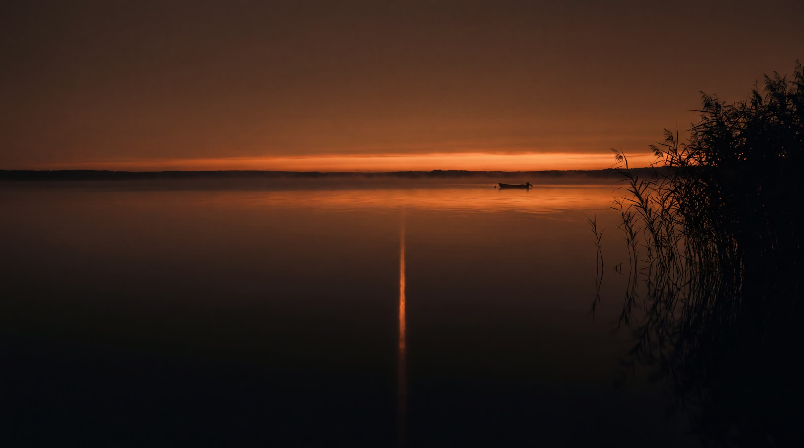
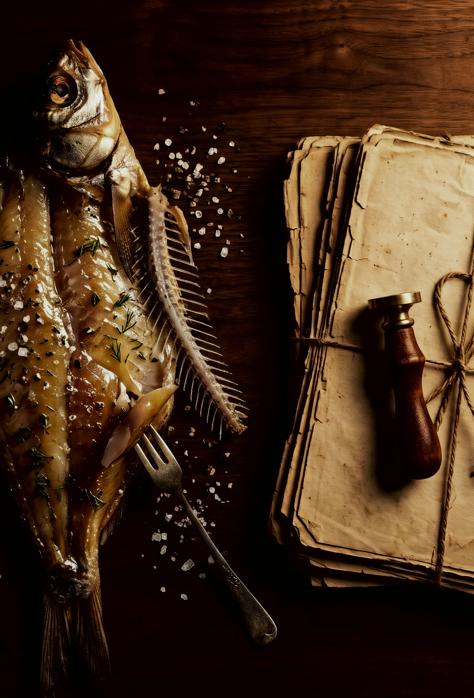
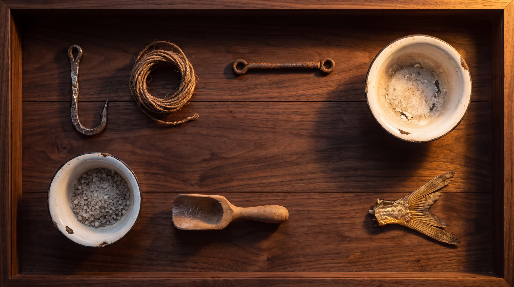

1967
Семья начала «сушить рыбку» — так это называли дома. Без вывески и без цеха, для своих.


Вся речная рыба — из Цимлянского водохранилища. Одного водоёма хватает на весь цех.
Дальше — заморозка сырья при −20 °C там, где по технологии хватает −18. Посол в подвале, не выше +8 °C. И ровно двое суток в сушилке.
Четыре шага производстваСемья начала «сушить рыбку» — так это называли дома. Без вывески и без цеха, для своих.
Дело стало официальным производством: ИП, документы, ГОСТ на упаковку.
Поставили американское холодильное оборудование. Сырьё морозим при −20 °C — по технологии достаточно −18.
Компьютерная сушилка с климат-контролем. Раньше солили только весной — теперь круглый год.
25 августа о нашей рыбе снял репортаж Первый канал.
Шестое десятилетие в деле. К 2027 году семейному промыслу шестьдесят лет.


непростое дело с массой хитростей, которые рыбаки передают от поколения к поколениюПервый канал, 25.08.2008 · репортаж Юлии Погореловой
Хитростям в семье учат по наследству: «Вялить рыбу Клевцова ещё отец учил».
В том же сюжете: покупать рыбу у дорог без документов — опасноПриёмка, посол, сушилка, готовая рыба под лампой. Постановочная съёмка: реальные кадры цеха — в репортаже Первого канала выше.
Заказать · +7 928 770-21-70